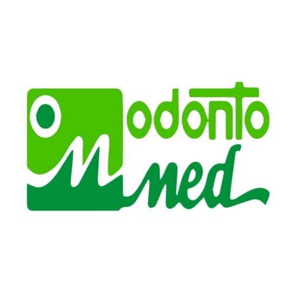

Clínica Odonto Med
Clínica Médica e Odontológica — Euclides da Cunha, BA
A recepção da Odonto Med não dava conta da alta demanda de mensagens no WhatsApp — pacientes esperavam muito tempo pra ser respondidos, e a equipe perdia tempo com perguntas repetitivas em vez de cuidar de quem já estava na clínica.
SoluçãoCriamos um sistema de atendimento automático que responde, qualifica e agenda pacientes direto pelo WhatsApp. Somos parceiros da Odonto Med desde janeiro de 2025, e também cuidamos da gestão de redes sociais e do site institucional da clínica.
O que a automação faz
Atende e qualifica
Recebe o primeiro contato, identifica a especialidade de interesse e já direciona pro agendamento ou pra recepção, quando for o caso.
Por quê? A recepção não dava conta de responder tudo na hora — a automação garante que ninguém fica esperando.
Agenda sozinha
Marca, reagenda ou cancela consultas verificando a disponibilidade de cada profissional automaticamente.
Tira dúvidas
Responde sobre valores, especialidades, convênios, horários e localização.
Resultados mensuráveis
Gestão de conteúdo para redes sociais
Os números abaixo são do período com apoio de IA na produção de conteúdo.
Planejamento mensal
Calendário editorial com 15 posts fixos por mês entre três especialidades âncora (Laboratório de Exames, Implante Dentário, Geriatria), além de posts extras pra datas comemorativas conectadas a alguma especialidade da clínica.
Briefing criativo pro designer
Título, corpo, subtítulo/tópicos e CTA pra cada post, com formato variado (tópicos, narrativa, mito x verdade, dado de impacto, storytelling) — sem repetir estrutura entre posts do mesmo mês.
Legendas para o Instagram
Linguagem acessível, uso estratégico de emojis, hashtags e CTA direcionado pra agendamento via telefone.
Apresentação de especialistas
Conteúdo especial pra anunciar novos médicos e especialistas, com foco no impacto pro paciente e no diferencial da clínica.
Site institucional
Site institucional
Site novo entregue, dando credibilidade e facilitando o contato de novos pacientes.
O que também podemos oferecer
Com atendimento, redes sociais e site já rodando, esses passos ajudam a atrair ainda mais pacientes novos.
Tráfego pago
Anúncios segmentados pra região, atraindo pacientes prontos pra agendar.
SEO local
Aparecer melhor no Google e no Google Meu Negócio pra quem busca na região.
Quer um case parecido com esse pro seu negócio?
Sem compromisso, sem pressão. É só bater um papo pra entender onde a tecnologia pode ajudar você.
Falar no WhatsApp